16 марта, суббота, шаббат
Утром в Бен Шумене очень много велосипедистов, большинство в защите колен, локтей и голени, естественно в шлемах. На нас только шлемы. Умом я понимаю, что они правы и для безопасной езды по местным грунтовым тропам нужна полная защита, но инерция мышления берет свое. Кстати за отсутствие перчаток я в этом походе поплатился, но об этом позже.
Быстренько собрались, перекусили едой купленной Андреем еще на Иерусалимском базаре, попили ароматного чайку, вскипяченного на шишках и тронулись.
Первые километры идут по хорошо размеченному грунтовому маршруту Телль-Авив - Иерусалим. Приятные дорожки, небольшие уклоны, вокруг море цветущей мимозы. Нарвали красных плодов кактуса Опунция. Достаточно вкусно, но руки потом проще побрить, чем вытащить все эти мелкие иголки. Земля здесь конечно благодатная и солнцем не обиженная, чего-только не встретили за день: грейпфрут, мушмулу, зеленый миндаль, лимоны, перцы. . .

Опунция
Полазили по заброшенному строению, стоящему на вершине холма. Полюбовались видами.
Перекус устроили около старой пожарной смотровой вышки. Опять топили печь шишками, к великому удивлению шашлычно-отдыхающих граждан. На туристической разметке в этом месте значится питьевая вода, но по факту ее там не нашли. Водой поделилась пожилая русскоговорящая пара, спасибо им за это! Осмотрели макет дороги по которой израильтяне прорывали блокаду Иерусалима. Кстати именно по этой дороге нам и предстояло дальше ехать.
Выяснилась первая техническая проблема. У Андрея сильно вращаются покрышки относительно обода, причем в разные стороны, передняя от торможения, а задняя от педалирования. Скорее всего, это связано с большой шириной покрышек - целых 2.6".
Все бы ничего, но за первую неделю Андрей уже срезал ниппель на одной из камер и теперь у него оставалась только одна запаска. Протирание тонким слоем спирта не помогло.
Вспомнился старый способ - промазать обод кока-колой в месте контакта с покрышкой. Почему мысль заменить колу просто раствором сахара мне не пришла в голову? даже не знаю. . . наверное хотелось колы. Кстати, дома я в таких случаях мажу обод спиртовым раствором канифоли, но здесь у нас ее естественно не было.
Однако магазинов на нашем пути не было до самого города Бейт-Шемеш, там тоже все магазины оказались закрыты по причине шаббата, но нас выручил маленький придорожный ларек с хозяином арабом.
Купили в ларьке хумуса и не без сожаления проехали мимо огромных супермаркетов, ну да ничего - с голода пока не умираем. Дальше наш путь лежал в сторону парка Британия. По плану должны были стать около кранов с питьевой водой, но этот кемпграунд оказался занятым сотней-другой скаутов. Пришлось немного вернуться и остановиться в тихом месте с прекрасным видом. Ночью шел небольшой дождик.
Вечером Андрей признался, что ему очень понравились сегодняшние грунтовки. Приятно было услышать.
Дневной пробег 60 км, набор высоты 1251 метров
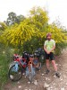 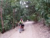 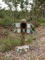 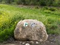 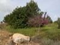 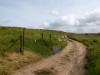 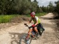 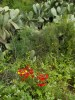 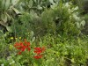 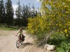 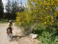 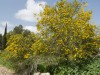 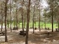 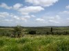 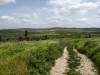  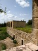 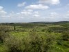 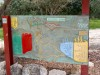 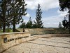 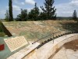 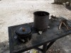 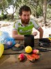 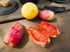 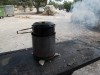 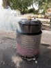 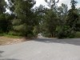 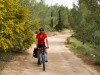 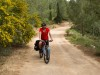 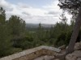 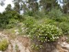 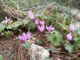 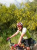 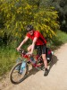 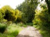 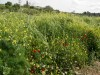 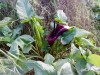 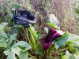 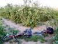 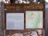
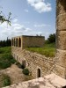 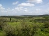 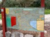 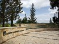 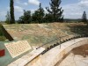 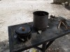 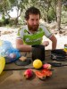 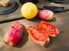 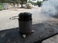 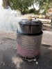 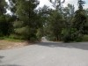 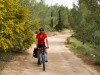 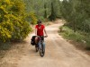 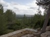 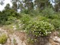 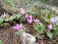 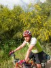 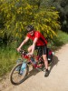 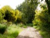 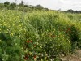 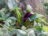 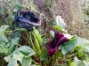 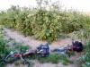 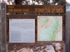
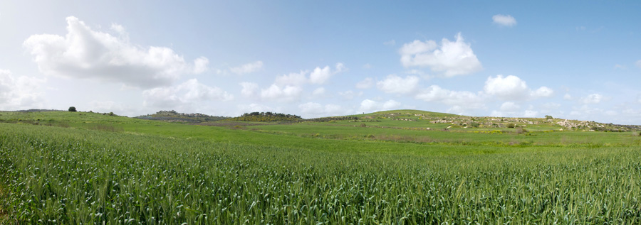